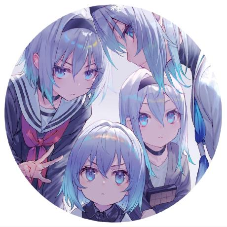

Automate
Let scripts handle the repetitive parts.
developer / automation / experiments
把重复的事情交给代码，把好奇心留给自己。
Turning repetitive work into small, reliable tools — and leaving room for the next experiment.

tymolu233
@building-in-public
A small corner for code, useful shortcuts, and ideas that are still becoming.
const focus = [
"automation",
"developer tools",
"good experiments"
];
Let scripts handle the repetitive parts.
Keep curiosity close to the keyboard.
Make useful things easy to find.
interactive layer
A tiny command line for this tiny corner of the internet. Type
help to begin.
booting personal interface...
connection established.
guest@tymolu233:~$ cat welcome.txt
selected work
Automated manifest updates for a smoother release workflow. Small utility, less manual maintenance.
Scripts, prototypes, and half-finished ideas live on GitHub. Some are polished; all are learning.
keep in touch
Open an issue, start a conversation, or just say hi. The best place to find me is GitHub.